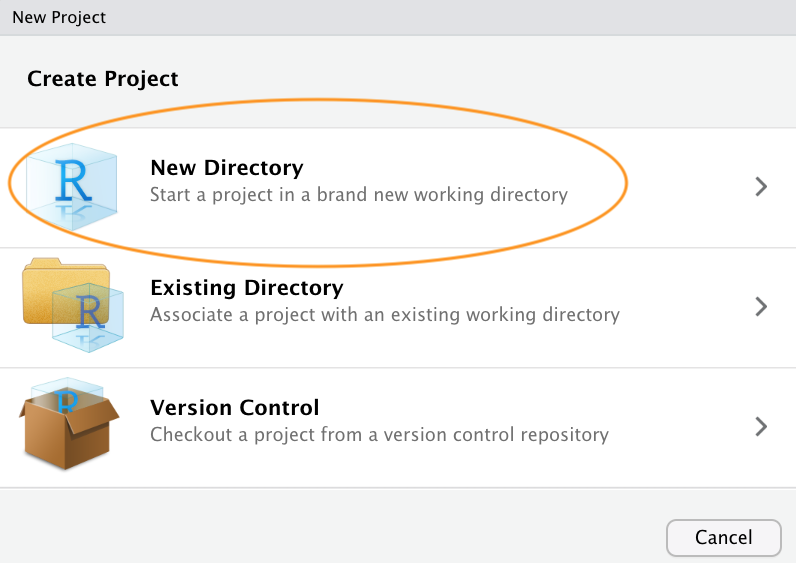
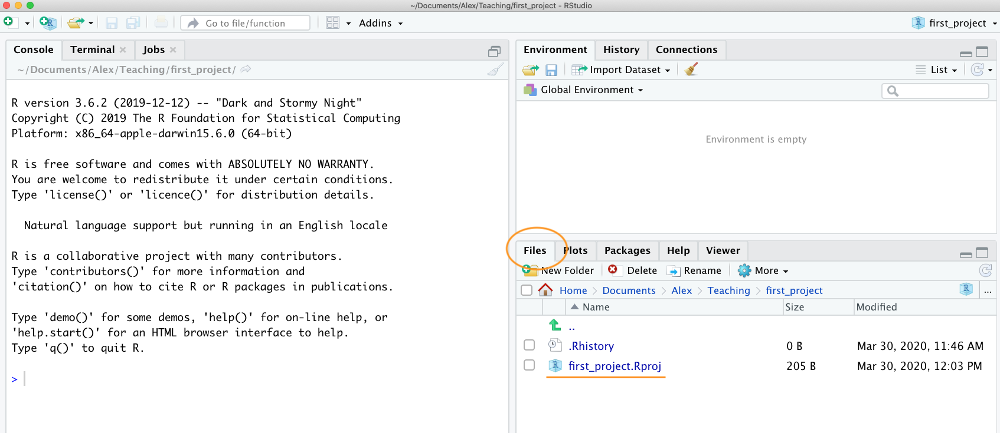
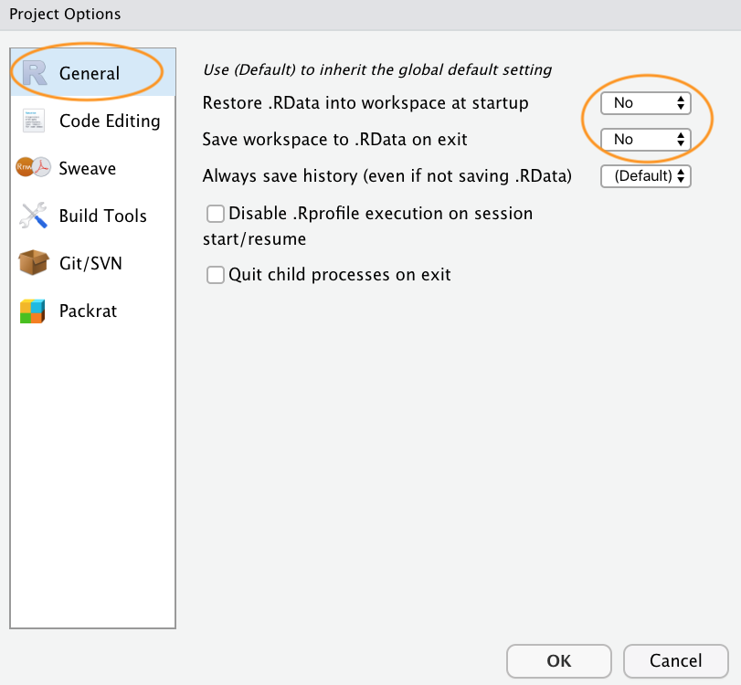

Setting up a reproducible project
This short tutorial will introduce you to setting up and managing a project in RStudio to facilitate robust and reproducible research. We will also touch on creating an organised directory structure, giving files useful names, documenting data and workflows and good scripting practice.
I estimate that this tutorial should take you roughly 30 minutes to 1 hour to complete in one sitting, but feel free to dip in and out over a longer period if that suits you better.
This tutorial assumes that you have already installed the latest versions of R and RStudio. If you haven’t done this yet you can find instructions here.
Why bother?
As with most things in life, when it comes to dealing with data and data analysis things are so much simpler if you’re organised. Clear project organisation makes it easier for both you (especially the future you) and your collaborators to make sense of what you’ve done. There’s nothing more frustrating than coming back to a project months (sometimes years) later and have to spend days (or weeks) figuring out where everything is, what you did and why you did it. A well documented project that has a consistent and logical structure increases the liklihood that you can pick up where you left off with minimal fuss no matter how much time has passed. In addition, it’s much easier to write code to automate tasks when files are well organised and are sensibly named. This is even more relevant nowadays as it’s never been easier to collect vasts amount of data which can be saved across 1000’s or even 100,000’s of separate data files. Lastly, having a well organised project reduces the risk of introducing bugs or errors into your workflow and if they do occur (which inevitably they will at some point), it makes it easier to track down these errors and deal with them efficiently.
Thankfully, there are some nice features in R and RStudio that make it quite easy to manage a project. There are also a few simple steps you can take right at the start of any project to help keep things shipshape.
Projects in RStudio
A great way of keeping things organised is to use RStudio Projects. An RStudio Project keeps all of your R scripts, R markdown documents, R functions and data together in one place. The nice thing about RStudio Projects is that each project has its own directory, workspace, history and source documents so different analyses that you are working on are kept completely separate from each other. This means that you can have multiple instances of RStudio open at the same time (if that’s your thing) or you can switch very easily between projects without fear of them interfering with each other.
To create a project, open RStudio and select File -> New Project... from the menu. You can create either an entirely new project, a project from an existing directory or a version controlled project (see the GitHub tutorial for further details about this). In this tutorial we will create a project in a new directory.

You can also create a new project by clicking on the ‘Project’ button in the top right of RStudio and selecting ‘New Project…’

In the next window select ‘New Project’.

Now enter the name of the directory you want to create in the ‘Directory name:’ field (we’ll call it first_project for this tutorial). If you want to change the location of the directory on your computer click the ‘Browse…’ button and navigate to where you would like to create the directory. I always tick the ‘Open in new session’ box as well. Finally, hit the ‘Create Project’ to create the new project.

Once your new project has been created you will now have a new folder on your computer that contains an RStudio project file called first_project.Rproj. This .Rproj file contains various project options (but you shouldn’t really interact with it) and can also be used as a shortcut for opening the project directly from the file system (just double click on it). You can check this out in the ‘Files’ tab in RStudio (or in Finder if you’re on a Mac or File Explorer in Windows).

The last thing I suggest you do is select Tools -> Project Options... from the menu. Click on the ‘General’ tab on the left hand side and then change the values for ‘Restore .RData into workspace at startup’ and ‘Save workspace to .RData on exit’ from ‘Default’ to ‘No’. This ensures that every time you open your project you start with a clean R session. You don’t have to do this (many people don’t) but I prefer to start with a completely clean workspace whenever I open my projects to avoid any potential conflicts with things I did in previous sessions. The downside to this is that you will need to rerun your R code every time you open you project.

Now that you have an RStudio project set up you can start creating R scripts (or R markdown documents) or whatever you need to complete you project. All of the R scripts will now be contained within the RStudio project and saved in the project folder.
Working directories
The working directory is the default location where R will look for files you want to load and where it will put any files you save. One of the great things about using RStudio Projects is that when you open a project it will automatically set your working directory to the appropriate location. You can check the file path of your working directory by looking at bar at the top of the Console pane. Note: the ~ symbol above is shorthand for /Users/nhy163/ on my Mac computer (the same on Linux computers).
You can also use the getwd() function in the Console which returns the file path of the current working directory.
In the example above, my working directory is a folder called ‘first_project’ which is a subfolder of "Teaching’ in my ‘Alex’ folder which in turn is in a ‘Documents’ folder located in the ‘nhy163’ folder which itself is in the ‘Users’ folder. On a Windows based computer my working directory would also include a drive letter (i.e. C:/Users/nhy163/Documents/Alex/Teaching/first_project).
If you weren’t using an RStudio Project then you would have to set your working directory using the setwd() function at the start of every R script (something I did for many years).
However, the problem with setwd() is that it uses an absolute file path which is specific to the computer you are working on. If you want to send your script to someone else (or if you’re working on a different computer) this absolute file path is not going to work on your friend/colleagues computer as their directory configuration will be different (you are unlikely to have a directory structure /Users/nhy163/Documents/Alex/Teaching/ on your computer). This results in a project that is not self-contained and not easily portable. RStudio solves this problem by allowing you to use relative file paths which are relative to the Root project directory. The Root project directory is just the directory that contains the .Rproj file (first_project.Rproj in our case). If you want to share your analysis with someone else, all you need to do is save the entire project directory and send to your to your collaborator. They would then just need to open the project file and any R scripts that contain references to relative file paths will just work. For example, let’s say that you’ve created a subdirectory called raw_data in your Root project directory that contains a tab delimited datafile called mydata.txt (we will cover directory structures below). To import this datafile in an RStudio project all you need to include in your R script is
Because the file path raw_data/mydata.txt is relative to the project directory it doesn’t matter where you collaborator saves the project directory on their computer it will still work.
If you weren’t using an RStudio project then you would have to use either of the options below neither of which would work on a different computer.
setwd("/Users/nhy163/Documents/Alex/Teaching/first_project/")
dataf <- read.table("raw_data/mydata.txt", header = TRUE, sep = "\t")
# or
dataf <- read.table("/Users/nhy163/Documents/Alex/Teaching/first_project/raw_data/mydata.txt",
header = TRUE, sep = "\t")
For those of you who want to take the notion of relative file paths a step further, take a look at the here() function in the here package. The here() function allows you to automagically build file paths for any file relative to the project root directory that are also operating system agnostic (works on a Mac or Windows machine). For example, to import our mydata.txt file from the raw_data directory just use
library(here) # you may need to install the here package first
dataf <- read.table(here("raw_data", "mydata.txt"), header = TRUE, sep = '\t')
# or without loading the here package
dataf <- read.table(here::here("raw_data", "mydata.txt"), header = TRUE, sep = '\t')
Directory structure
In addition to using RStudio Projects, it’s also really good practice to structure your directory in a consistent and logical way to help both you and your collaborators. I frequently use the following directory structure in my R based projects
Root
|
|__data
| |_raw_data
| |_processed_data
| |_metadata
|
|_R
|
|_Rmd
|
|_scripts
|
|_output
In my working directory I have the following directories:
Root - This is your project directory containing your .Rproj file.
data - I store all my data in this directory. The subdirectory called
raw_datacontains raw data files and only raw data files. These files should be treated as read only and should not be changed in any way. If you need to process/clean/modify your data do this in R (not MS Excel) as you can document (and justify) any changes made. Any processed data should be saved to a separate file and stored in theprocessed_datasubdirectory. Information about data collection methods, details of data download and any other useful metadata should be saved in a text document (see README text files below) in themetadatasubdirectory.R - This is an optional directory where I save all of my custom R functions I have written for the current analysis. These can then be sourced into R using the
source()function.Rmd - An optional directory where I save my R markdown documents.
scripts - All of the main R scripts I have written for the current project are saved here.
output - Outputs from my R scripts such as plots, HTML files and data summaries are saved in this directory. This helps me and my collaborators distinguish what files are outputs and which are source files.
Of course, the structure described above is just what works for me most of the time and should be viewed as a starting point for your own needs. I tend to have a fairly consistent directory structure across my projects as this allows me to quickly orientate myself when I return to a project after a while. Having said that, different projects will have different requirements so I happily add and remove directories as required.
You can create your directory structure using Windows Explorer (or Finder on a Mac) or within RStudio by clicking on the ‘New folder’ button in the ‘Files’ pane.
An alternative approach is to use the dir.create() function in the R Console
# create directory called 'data'
dir.create('data')
# create subdirectory raw_data in the data directory
dir.create('data/raw_data')
# list the files and directories
list.files(recursive = TRUE, include.dirs = TRUE)
# [1] "data" "data/raw_data" "first_project.Rproj"
File names
What you call your files matters more than you might think. Naming files is also more difficult than you think. The key requirement for a ‘good’ file name is that it’s informative whilst also being relatively short. This is not always an easy compromise and often requires some thought. Ideally you should try to avoid the following!

source:https://xkcd.com/1459/
Although there’s not really a recognised standard approach to naming files (actually there is, just not everyone uses it), there are a couple of things to bear in mind.
First, avoid using spaces in file names by replacing them with underscores or even hyphens. Why does this matter? One reason is that some command line software (especially many bioinformatic tools) won’t recognise a file name with a space and you’ll have to go through all sorts of shenanigans using escape characters to make sure spaces are handled correctly. Even if you don’t think you will ever use command line software you may be doing so indirectly. Take R markdown for example, if you want to render an R markdown document to pdf using the
rmarkdownpackage you will actually be using a command line LaTeX engine under the hood. Another good reason not to use spaces in file names is that it makes searching for file names (or parts of file names) using regular expressions in R (or any other language) much more difficult.For the reasons given above, avoid using special characters (i.e. @£$%^&*():;<>?{}/) in your file names.
If you are versioning your files with sequential numbers (i.e. file1, file2, file3 …) and you have more than 9 files you should use 01, 02, 03 .. 10 as this will ensure the files are printed in the correct order (see what happens if you don’t). If you have more than 99 files then use 001, 002, 003 …etc.
If your file names include dates, use the ISO 8601 format YYYY-MM-DD (or YYYYMMDD) to ensure your files are sorted in proper chronological order.
Never use the word final in any file name - it never is!
Whatever file naming convention you decide to use, try to adopt early, stick with it and be consistent. You’ll thank me!
Project documentation
A quick note or two about writing R code and creating R scripts. Unless you’re doing something really quick and dirty I suggest that you always write your R code as an R script. R scripts are what make R so useful. Not only do you have a complete record of your analysis, from data manipulation, visualisation and statistical analysis, you can also share this code (and data) with friends, colleagues and importantly when you submit and publish your research to a journal. With this in mind, make sure you include in your R script all the information required to make your work reproducible (author names, dates, sampling design etc). This information could be included as a series of comments # or, even better, by mixing executable code with narrative into an R markdown document. It’s also good practice to include the output of the sessionInfo() function at the end of any script which prints the R version, details of the operating system and also loaded packages.
Here is an example of including meta-information at the start of an R script
# Title: Time series analysis of snouters
# Purpose : This script performs a time series analyses on snouter count data.
# Data consists of counts of snouter species collected from 18 islands
# in the Hy-yi-yi archipelago between 1950 and 1957.
# For details of snouter biology see:
# https://en.wikipedia.org/wiki/Rhinogradentia
# Project number: #007
# Data file: '/Users/Another/snouter_analysis/snouter_pop.txt'
# Author: A. Nother
# Contact details: a.nother@uir.ac.uk
# Date script created: Mon Dec 2 16:06:44 2019 ------------------------------
# Date script last modified: Thu Dec 12 16:07:12 2019 ----------------------
# package dependencies
library(PopSnouter)
library(ggplot2)
print('put your lovely R code here')
# good practice to include sessionInfo
sessionInfo()
This is just one example and there are no hard and fast rules so feel free to develop a system that works for you. A really useful shortcut in RStudio is to automatically include a time and date stamp in your R script. To do this, write ts where you want to insert your time stamp in your R script and then press the ‘shift + tab’ keys. RStudio will magically convert ts into the current date and time and also automatically comment out this line with a #. Another really useful RStudio shortcut is to comment out multiple lines in your script with a # symbol. To do this, highlight the lines of text you want to comment and then press ‘ctrl + shift + c’. To uncomment the lines just use ‘ctrl + shift + c’ again.
In addition to including metadata in your R scripts it’s also common practice to create a separate text file to record important information. By convention these text files are named README. I often include a README file in the directory where I keep my raw data. In this file I include details about when data were collected (or downloaded), how data were collected, information about specialised equipment, preservation methods, type and version of any machines used (i.e. sequencing equipment) etc. You can create a README file for your project in RStudio by clicking on the File -> New File -> Text File menu.
R style guide
How you write your code is more or less up to you although your goal should be to make it as easy to read as possible (for you and others). Whilst there are no rules (and no code police), I encourage you to get into the habit of writing readable R code by adopting a particular style. I suggest that you follow Google’s R style guide whenever possible. This style guide will help you decide where to use spaces, how to indent code and how to use square [ ] and curly { } brackets amongst other things. If all that sounds like too much hard work you can install the styler package which includes an RStudio add-in to allow you to automatically restyle selected code (or entire files and projects) with the click of your mouse. You can find more information about the styler package including how to install here. Once installed, you can highlight the code you want to restyle, click on the ‘Addins’ button at the top of RStudio and select the ‘Style Selection’ option. Here is an example of poorly formatted R code

Now highlight the code and use the styler package to reformat

To produce some nicely formatted code

Backing up projects
Don’t be that person who loses hard won (and often expensive) data and analyses. Don’t be that person who thinks it’ll never happen to me - it will! Always think of the absolute worst case scenario, something that makes you wake up in a cold sweat at night, and do all you can to make sure this never happens. Just to be clear, if you’re relying on copying your precious files to an external hard disk or USB stick this is NOT an effective backup strategy. These things go wrong all the time as you lob them into your rucksack or ‘bag for life’ and then lug them between your office and home. Even if you do leave them plugged into your computer what happens when the building burns down (I did say worst case!)?
Ideally, your backups should be offsite and incremental. Happily there are numerous options for backing up your files. The first place to look is in your own institute. Most (all?) Universities have some form of network based storage that should be easily accessible and is also underpinned by a comprehensive disaster recovery plan. Other options include cloud based services such as Google Docs and Dropbox (to name but a few), but make sure you’re not storing sensitive data on these services and are comfortable with the often eye watering privacy policies.
Whilst these services are pretty good at storing files, they don’t really help with incremental backups. Finding previous versions of files often involves spending inordinate amounts of time trawling through multiple files named ‘final.doc’, ‘final_v2.doc’ and ‘final_usethisone.doc’ etc until you find the one you were looking for. The best way I know for both backing up files and managing different versions of files is to use Git and GitHub. To find out more about how you can use RStudio, Git and GitHub together see this tutorial.